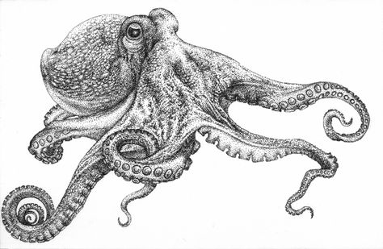
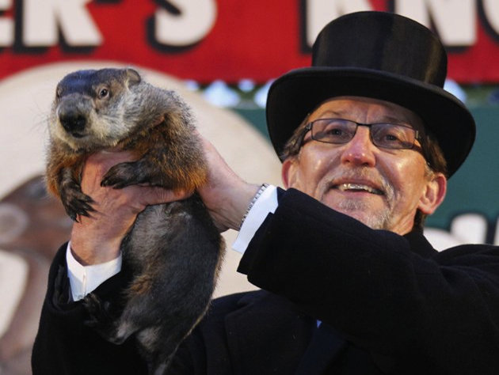
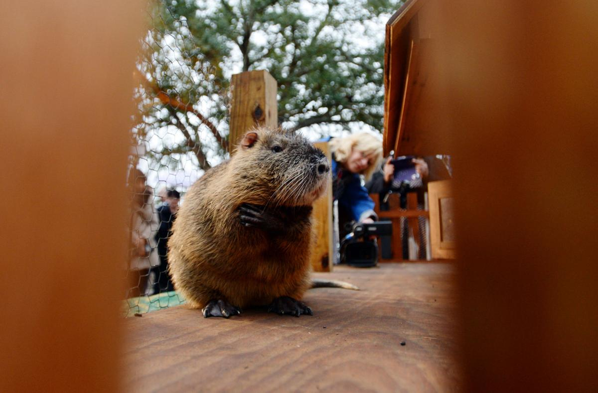
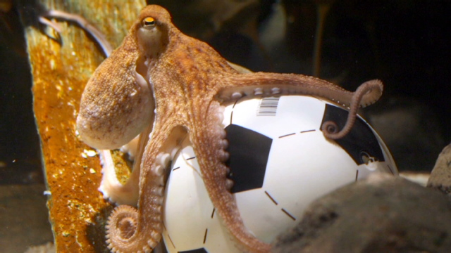
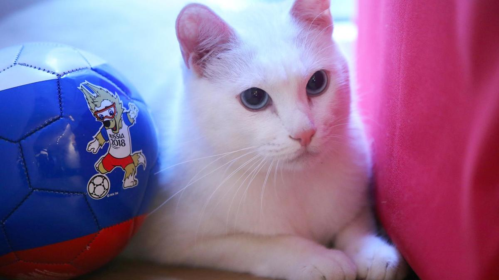
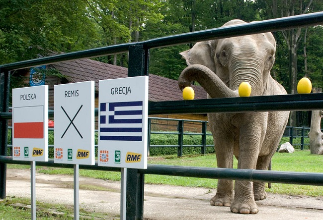
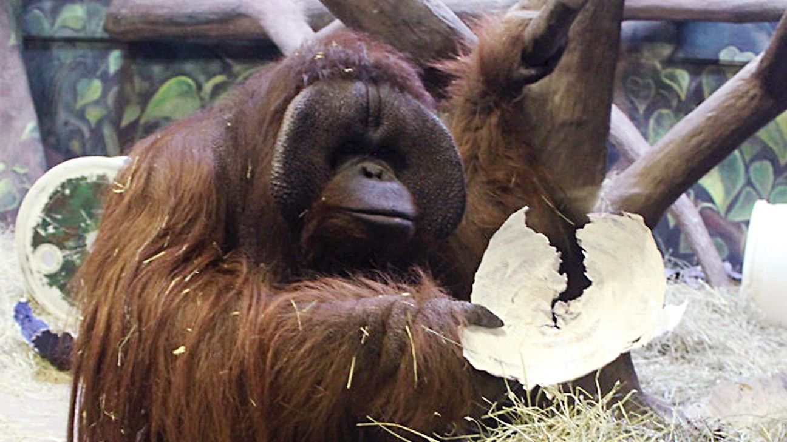
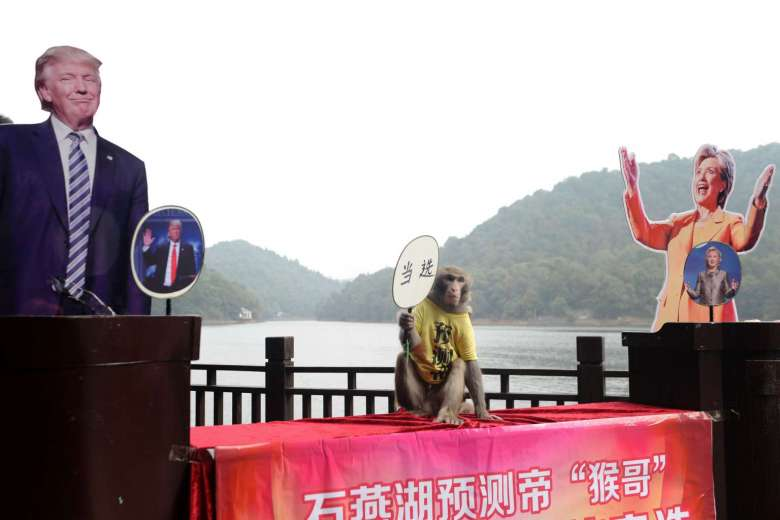
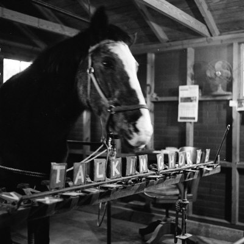
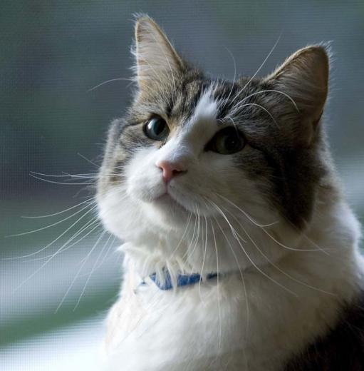

Skip to main content.
Predictive Animalytics

Predictive Animals

Punxsutawney Phil
- 1887 - Present
- Country: United States
- Prediction: Length of Winter

Pierre C. Shadeaux
- Country: United States
- Predition: Length of Winter

Paul the Octopus
- 2008-2010
- Country: Germany
- Prediction: World Cup

Achilles the Cat
- Country: Russia
- Prediction: World Cup

Citta the Elephant
- Country: Poland
- Prediction: World Cup

Eli the Orangutan
- 1990-2014
- Country: United States
- Prediction: Super Bowl

Geda the Monkey
- Country: China
- Prediction: US Presidential Election

Lady Wonder
- 1924-1957
- Country: United States
- Prediction: Boxing Matches, Crimes, Oil Deposits

Oscar the Cat
- Country: United States
- Prediction: Death